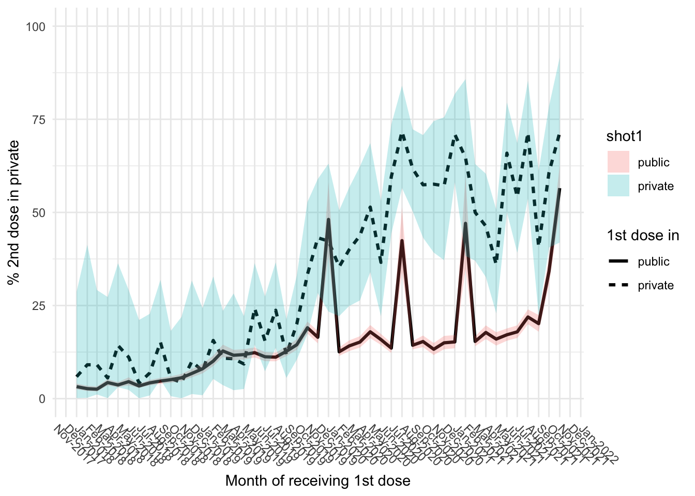
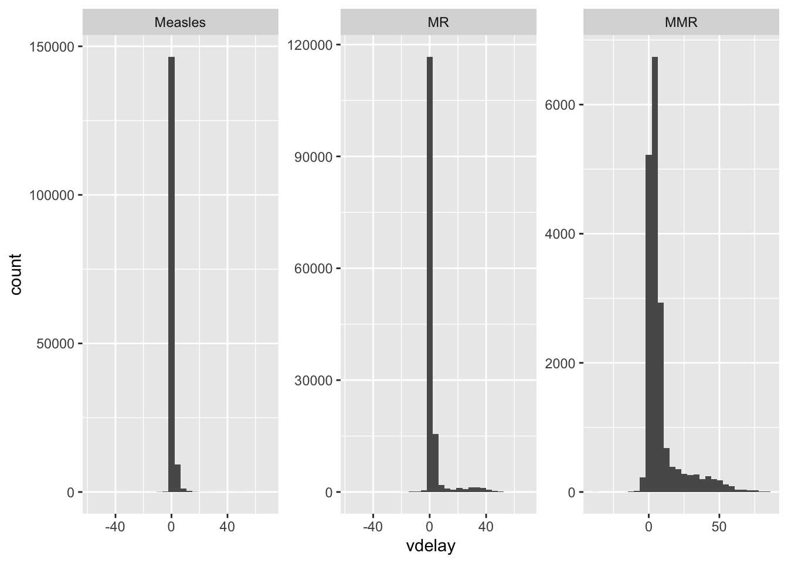

Hai Duong: Measles
Duc Du, Thinh Ong
2020-01-29 (update: 2022-08-25)
Last updated: 2022-08-25
Checks: 6 1
Knit directory: Vaccination_COVID/
This reproducible R Markdown analysis was created with workflowr (version 1.7.0). The Checks tab describes the reproducibility checks that were applied when the results were created. The Past versions tab lists the development history.
The R Markdown file has unstaged changes. To know which version of the R Markdown file created these results, you’ll want to first commit it to the Git repo. If you’re still working on the analysis, you can ignore this warning. When you’re finished, you can run wflow_publish to commit the R Markdown file and build the HTML.
Great job! The global environment was empty. Objects defined in the global environment can affect the analysis in your R Markdown file in unknown ways. For reproduciblity it’s best to always run the code in an empty environment.
The command set.seed(20210126) was run prior to running the code in the R Markdown file. Setting a seed ensures that any results that rely on randomness, e.g. subsampling or permutations, are reproducible.
Great job! Recording the operating system, R version, and package versions is critical for reproducibility.
Nice! There were no cached chunks for this analysis, so you can be confident that you successfully produced the results during this run.
Great job! Using relative paths to the files within your workflowr project makes it easier to run your code on other machines.
Great! You are using Git for version control. Tracking code development and connecting the code version to the results is critical for reproducibility.
The results in this page were generated with repository version 8629620. See the Past versions tab to see a history of the changes made to the R Markdown and HTML files.
Note that you need to be careful to ensure that all relevant files for the analysis have been committed to Git prior to generating the results (you can use wflow_publish or wflow_git_commit). workflowr only checks the R Markdown file, but you know if there are other scripts or data files that it depends on. Below is the status of the Git repository when the results were generated:
Ignored files:
Ignored: .DS_Store
Ignored: .Rhistory
Ignored: .Rproj.user/
Ignored: analysis/.DS_Store
Ignored: analysis/.Rhistory
Ignored: code/.DS_Store
Unstaged changes:
Modified: analysis/haiduong_measles.Rmd
Note that any generated files, e.g. HTML, png, CSS, etc., are not included in this status report because it is ok for generated content to have uncommitted changes.
These are the previous versions of the repository in which changes were made to the R Markdown (analysis/haiduong_measles.Rmd) and HTML (docs/haiduong_measles.html) files. If you’ve configured a remote Git repository (see ?wflow_git_remote), click on the hyperlinks in the table below to view the files as they were in that past version.
| File | Version | Author | Date | Message |
|---|---|---|---|---|
| Rmd | 8629620 | thinhong | 2022-08-25 | add vaccine coverage and confidence interval |
| html | 8629620 | thinhong | 2022-08-25 | add vaccine coverage and confidence interval |
knitr::opts_chunk$set(echo = T, warning = F, message = F, out.width = "100%")
library(data.table)
library(dplyr)Warning: package 'dplyr' was built under R version 4.1.2
Attaching package: 'dplyr'The following objects are masked from 'package:data.table':
between, first, lastThe following objects are masked from 'package:stats':
filter, lagThe following objects are masked from 'package:base':
intersect, setdiff, setequal, unionlibrary(tidyr)Warning: package 'tidyr' was built under R version 4.1.2library(lubridate)
Attaching package: 'lubridate'The following objects are masked from 'package:data.table':
hour, isoweek, mday, minute, month, quarter, second, wday, week,
yday, yearThe following objects are masked from 'package:base':
date, intersect, setdiff, unionlibrary(ggplot2)
library(gtsummary)Warning: package 'gtsummary' was built under R version 4.1.2library(ggsci)
library(plotly)
Attaching package: 'plotly'The following object is masked from 'package:ggplot2':
last_plotThe following object is masked from 'package:stats':
filterThe following object is masked from 'package:graphics':
layoutdatap <- file.path("~", "Downloads", "updated_dataset")
covidvc <- readRDS(file.path(datap, "Combined_VAC_COVID19_2022-02-17.rds"))
measle_all <- readRDS(file.path(datap, "measles_haiduong.rds"))
measle_all <- data.table(measle_all)
hepb <- readRDS(file.path(datap, "hepb_haiduong.rds"))
hepb <- data.table(hepb)
hepb <- hepb[which(hepb$shot == 1),]
time_step <- "month"
measle_all$vacym <- floor_date(measle_all$vacdate, time_step)
measle_all$vacname2 <- factor(measle_all$vacname2, levels = c("Measles", "MR", "MMR"))# measle_all <- measle_all %>%
# group_by(pid) %>%
# arrange(vacdate) %>%
# mutate(shot_any = 1:n()) %>%
# ungroup()
#
# table(measle_all$shot_any)
# table(measle_all$shot)Measles and COVID-19 vaccination per month
covidvc <- covidvc[which(covidvc$location == "Hai Duong"),]
covidvc$total_shots <- rowSums(covidvc[,c("vaccinated_1st", "vaccinated_2nd", "vaccinated_3rd")], na.rm = T)
covidvc$vacym <- floor_date(covidvc$date, time_step)
covidvc$vacyear <- year(covidvc$vacym)
covidvc$vacmonth <- month(covidvc$vacym)
covid <- covidvc %>%
group_by(vacyear, vacmonth) %>%
summarise(n = sum(total_shots))
covid$vacname2 <- "COVID vaccine"
covid$n <- covid$n / 50
df_plot <- measle_all %>%
count(vacyear, vacmonth, vacname2)
df_plot <- rbind(df_plot, covid)
ggplot(df_plot, aes(x = vacmonth, y = n, color = vacname2)) +
geom_line(stat = "identity") +
facet_wrap(~ vacyear) +
scale_x_continuous(breaks = scales::pretty_breaks(n = 6)) +
labs(x = NULL) +
theme_light()
| Version | Author | Date |
|---|---|---|
| 8629620 | thinhong | 2022-08-25 |
- High peak of MR shots in Nov 2019
- No disruption in Apr 2020
- Disruptions in Aug 2020 and Feb 2021
Vaccination campaign in Nov 2019
An MR vaccination campaign is triggered during this time in Hai Duong, focusing on children 1-5 year-old
tmp_year <- 2019
tmp <- measle_all[which(measle_all$vacyear == tmp_year),]
ggplot(tmp, aes(x = vagem)) +
geom_histogram() +
facet_wrap(~ vacmonth, scales = "free") +
scale_x_continuous(breaks = scales::pretty_breaks(n = 5)) +
labs(x = "Age at vaccination (months)") +
ggtitle(tmp_year)
| Version | Author | Date |
|---|---|---|
| 8629620 | thinhong | 2022-08-25 |
No disruption in Apr 2020 but in Aug 2020 and Feb 2021
The monthly vaccination date at public clinics is usually at the end of the month. In Mar 2020: right before lockdown they vaccinate children and right after lockdown they came back to vaccinate children
Hai Duong had a Hai Duong city-wide lockdown from 14/8-28/8, this time looks like they only organised the vaccination day in Sep so all children scheduled in Aug miss the shot
tmp_vacyear <- 2020
tmp <- measle_all[which(measle_all$vacyear == tmp_vacyear),]
df_plot <- tmp %>%
count(vacdate, vacname2)
ggplot(df_plot, aes(x = vacdate, y = n, color = vacname2)) +
geom_rect(aes(xmin = ymd("2020-04-01"), xmax = ymd("2020-04-21"), ymin = -Inf, ymax = Inf), fill = "grey90", color = NA, alpha = 0.3) +
geom_rect(aes(xmin = ymd("2020-08-14"), xmax = ymd("2020-08-28"), ymin = -Inf, ymax = Inf), fill = "grey90", color = NA, alpha = 0.3) +
geom_line(stat = "identity") +
scale_x_date(date_breaks = "1 month", labels = scales::date_format("%b")) +
labs(x = NULL) +
theme_light() +
ggtitle(tmp_vacyear)
| Version | Author | Date |
|---|---|---|
| 8629620 | thinhong | 2022-08-25 |
Zoom in 2021
Hai Duong had a province-wide lockdown from 28/1/2021 - 15/2 (Directive 15), 16/2 - 2/3 (Directive 16), 3/3 - 17/3 (Directive 15), 18/3 - 31/3 (Directive 19)
Directive 16 > 15 > 19
tmp_vacyear <- 2021
tmp <- measle_all[which(measle_all$vacyear == tmp_vacyear),]
df_plot <- tmp %>%
count(vacdate, vacname2)
ggplot(df_plot, aes(x = vacdate, y = n, color = vacname2)) +
geom_rect(aes(xmin = ymd("2021-01-28"), xmax = ymd("2021-02-15"), ymin = -Inf, ymax = Inf), fill = "grey90", color = NA, alpha = 0.5) +
geom_rect(aes(xmin = ymd("2021-02-16"), xmax = ymd("2021-03-02"), ymin = -Inf, ymax = Inf), fill = "grey90", color = NA, alpha = 0.5) +
geom_rect(aes(xmin = ymd("2021-03-03"), xmax = ymd("2021-03-17"), ymin = -Inf, ymax = Inf), fill = "grey90", color = NA, alpha = 0.5) +
geom_rect(aes(xmin = ymd("2021-03-18"), xmax = ymd("2021-03-31"), ymin = -Inf, ymax = Inf), fill = "wheat", color = NA, alpha = 0.5) +
geom_line(stat = "identity") +
scale_x_date(date_breaks = "1 month", labels = scales::date_format("%b")) +
labs(x = NULL) +
theme_light() +
ggtitle(tmp_vacyear)
| Version | Author | Date |
|---|---|---|
| 8629620 | thinhong | 2022-08-25 |
Public vs private
First let decide how a shot is public or private
table(measle_all$clinic_type)
hospital other private public unknown
389 2171 36149 353342 12616 measle_all$type2 <- ifelse(
measle_all$clinic_type %in% c("unknown", "other"),
measle_all$vactype,
ifelse(
measle_all$clinic_type == "hospital",
"private",
measle_all$clinic_type
)
)
measle_all$type2 <- ifelse(measle_all$type2 == "campaign", "public", measle_all$type2)
# table(measle_all$type2)Extract children who get 2 shots
measles_2shots <- measle_all[duplicated(measle_all$pid) | duplicated(measle_all$pid, fromLast = T),]
dup_sameday <- measles_2shots[duplicated(measles_2shots[,c("pid", "vacdate")]) |
duplicated(measles_2shots[,c("pid", "vacdate")], fromLast = T),
c("pid", "vacdate", "vacname2", "type2")]
dup_sameday <- dup_sameday[order(dup_sameday$pid),]
# head(dup_sameday, 10)Some received the same vaccine in the same day, filter them out and continue
# Remove children with multiple shots of measles in the same day
measles_2shots <- measles_2shots %>%
distinct(., pid, vacdate, .keep_all = T)
# Now subset the one still get 2 shots
measles_2shots <- measles_2shots[duplicated(measles_2shots$pid) | duplicated(measles_2shots$pid, fromLast = T),]
# Sort by vaccination date and numbering the shot
measles_2shots <- measles_2shots %>%
group_by(pid) %>%
arrange(vacdate) %>%
mutate(vtimes = 1:n(),
vacdate_1st = first(vacdate)) %>%
ungroup()
# How many shots they receive
# table(measles_2shots$vtimes)Some received 3 shots, filtered them out.
# Remove those who get the 3rd shot
measles_2shots <- measles_2shots[measles_2shots$vtimes != 3,]
measles_2shots <- measles_2shots[order(measles_2shots$pid),]
# Prefix "shot" to vtimes to make wide data frame easier
measles_2shots$vtimes <- paste0("shot", measles_2shots$vtimes)Change dataset from long to wide format
df <- measles_2shots[, c("pid", "vacdate_1st", "vtimes", "type2")]
df <- df %>%
pivot_wider(., names_from = vtimes, values_from = type2)
df$vyear_1st <- year(df$vacdate_1st)
df$vmonth_1st <- month(df$vacdate_1st)
# head(df)Aggregate them by month
df_type <- aggregate(pid ~ vyear_1st + vmonth_1st + shot1 + shot2, data = df, FUN = length)
df_type <- df_type %>%
group_by(vyear_1st, vmonth_1st, shot1) %>%
mutate(denom = sum(pid))
df_type$pct2 <- 100 * df_type$pid / df_type$denom
res <- t(apply(df_type[,c("pid", "denom")], 1, FUN = function(x) {
rr <- binom.test(x[1], x[2])
with(rr, c(x,
"low_ci" = 100 * conf.int[1],
"high_ci" = 100 * conf.int[2]))
}))
res <- cbind(res, df_type[,grep("pid|denom", colnames(df_type), invert = T)])
# Take 01/2018 as an example
# df_type %>%
# filter(vyear_1st == 2018 & vmonth_1st == 1) %>%
# print()Line plot
# Get only row that 2nd shot is private
df_plot <- res[res$shot2 == "private",]
# To plot on a date format x-axis
df_plot$vacdate_1st <- ym(paste0(df_plot$vyear_1st, "-", df_plot$vmonth_1st))
# Subset from 09/2017 to 03/2020
df_plot <- df_plot[df_plot$vacdate_1st >= "2018-01-01" &
df_plot$vacdate_1st <= "2021-11-01",]
df_plot$shot1 <- factor(df_plot$shot1, levels = c("public", "private"))
ggplot(df_plot, aes(x = vacdate_1st, y = pct2, group = shot1)) +
geom_line(aes(linetype = shot1), stat = "identity", size = 1.1) +
geom_ribbon(aes(ymin = low_ci, ymax = high_ci, fill = shot1), alpha = 0.25) +
# geom_vline(xintercept=as.numeric(as.Date("2019-07-01")), color = "orange") +
scale_x_date(date_labels = "%b-%Y", date_breaks = "1 month") +
ylim(c(0, 100)) +
theme_minimal() +
labs(x = "Month of receiving 1st dose", y = "% 2nd dose in private", linetype = "1st dose in") +
theme(axis.text.x = element_text(angle = -45, hjust = -0.1),
panel.grid.minor.x = element_blank())
| Version | Author | Date |
|---|---|---|
| 8629620 | thinhong | 2022-08-25 |
tmp <- df_plot[df_plot$vacdate_1st %in% as.Date(c("2020-01-01", "2020-08-01", "2021-02-01")),]
tmp[order(tmp$vacdate_1st),]# A tibble: 6 × 10
pid denom low_ci high_ci vyear_1st vmonth_1st shot1 shot2 pct2 vacdate_…¹
<dbl> <dbl> <dbl> <dbl> <dbl> <dbl> <fct> <chr> <dbl> <date>
1 11 26 23.4 63.1 2020 1 private priv… 42.3 2020-01-01
2 51 106 38.3 58.0 2020 1 public priv… 48.1 2020-01-01
3 33 46 56.5 84.0 2020 8 private priv… 71.7 2020-08-01
4 56 132 33.9 51.3 2020 8 public priv… 42.4 2020-08-01
5 11 17 38.3 85.8 2021 2 private priv… 64.7 2021-02-01
6 32 68 34.8 59.6 2021 2 public priv… 47.1 2021-02-01
# … with abbreviated variable name ¹vacdate_1sttmp <- df_plot[df_plot$vacdate_1st >= "2021-03-01",]
tmp[order(tmp$vacdate_1st),]# A tibble: 18 × 10
pid denom low_ci high_ci vyear_1st vmonth_1st shot1 shot2 pct2 vacdate_…¹
<dbl> <dbl> <dbl> <dbl> <dbl> <dbl> <fct> <chr> <dbl> <date>
1 31 62 37.0 63.0 2021 3 priva… priv… 50 2021-03-01
2 445 2897 14.1 16.7 2021 3 public priv… 15.4 2021-03-01
3 25 54 32.6 60.4 2021 4 priva… priv… 46.3 2021-04-01
4 304 1711 16.0 19.7 2021 4 public priv… 17.8 2021-04-01
5 18 50 22.9 50.8 2021 5 priva… priv… 36 2021-05-01
6 266 1664 14.3 17.8 2021 5 public priv… 16.0 2021-05-01
7 29 44 50.1 79.5 2021 6 priva… priv… 65.9 2021-06-01
8 354 2065 15.5 18.8 2021 6 public priv… 17.1 2021-06-01
9 26 48 39.2 68.6 2021 7 priva… priv… 54.2 2021-07-01
10 364 2030 16.3 19.7 2021 7 public priv… 17.9 2021-07-01
11 25 35 53.7 85.4 2021 8 priva… priv… 71.4 2021-08-01
12 372 1697 20.0 24.0 2021 8 public priv… 21.9 2021-08-01
13 11 27 22.4 61.2 2021 9 priva… priv… 40.7 2021-09-01
14 258 1281 18.0 22.4 2021 9 public priv… 20.1 2021-09-01
15 17 28 40.6 78.5 2021 10 priva… priv… 60.7 2021-10-01
16 237 694 30.6 37.8 2021 10 public priv… 34.1 2021-10-01
17 10 14 41.9 91.6 2021 11 priva… priv… 71.4 2021-11-01
18 156 276 50.4 62.5 2021 11 public priv… 56.5 2021-11-01
# … with abbreviated variable name ¹vacdate_1stPopulation level
df <- measle_all[, c("pid", "province", "vacyear", "vacmonth", "type2")]
df_type <- aggregate(pid ~ vacyear + vacmonth + type2, data = df, FUN = length)
# Percentage of private
df_type <- df_type %>%
group_by(vacyear, vacmonth) %>%
mutate(denom = sum(pid))
df_type$pct <- 100 * df_type$pid / df_type$denom
# Get only row that 2nd shot is private
df_plot <- df_type[df_type$type2 == "private",]
# To plot on a date format x-axis
df_plot$vacdate <- ym(paste0(df_plot$vacyear, "-", df_plot$vacmonth))
df_plot <- df_plot[df_plot$vacdate >= "2017-09-01",]
ggplot(df_plot, aes(x = vacdate, y = pct)) +
geom_line(stat = "identity") +
# geom_vline(xintercept=as.numeric(as.Date("2020-04-01")), color = "orange") +
labs(y = "Percentage of private shot (%)", x = "Month of receiving shot") +
theme_minimal()
| Version | Author | Date |
|---|---|---|
| 8629620 | thinhong | 2022-08-25 |
Children who got 2 shots
ggplot(measles_2shots, aes(x = vdelay)) +
geom_histogram() +
facet_wrap(~ vacname2, scales = "free")
| Version | Author | Date |
|---|---|---|
| 8629620 | thinhong | 2022-08-25 |
tmp <- measle_all[which(measle_all$vacname2 == "MMR"),]
table(tmp$shot)
1
49723 hepb$dob_ym <- floor_date(hepb$dob, time_step)
measle_all$dob_ym <- floor_date(measle_all$dob, time_step)
measle_all$vac_ym <- floor_date(measle_all$vacdate, time_step)Children born in 2019 received Measles
yr <- 2019
# Make a vector contains 12 months in the year of interest
start_yr <- ym(paste0(yr, "-01"))
end_yr <- ym(paste0(yr, "-12"))
range_yr <- seq(start_yr, end_yr, "months")
d <- list()
for (i in 1:length(range_yr)) {
l <- list()
# Get the month of birth of this cohort
cohort <- range_yr[i]
# Number of kids taken from Hep B
kids <- hepb %>%
filter(
dob_ym == cohort
) %>%
nrow()
for (j in 1:12) {
# Measles vaccine: 9 month after month of birth
start_shots <- cohort + months(9)
# The range to get cumulative vaccine coverage
end_shots <- start_shots + months(j - 1)
shots <- measle_all %>%
filter(
dob_ym == cohort,
# Month of vaccination between start and end
vac_ym >= start_shots,
vac_ym <= end_shots,
vacname2 %in% c("Measles")
) %>%
distinct(., pid, .keep_all = T) %>%
nrow()
l[[j]] <- data.frame(
cohort = cohort,
month_cov = end_shots,
n_month = j + 8,
cov = shots / kids
)
}
d[[i]] <- do.call(rbind, l)
}
df_plot <- do.call(rbind, d)
df_plot$cohort <- factor(df_plot$cohort)
plot_ly(df_plot, x = ~n_month, y = ~cov, color = ~cohort,
type = "scatter", mode = "lines",
hovertext = paste0("Cohort: ", df_plot$cohort, "<br>",
"Cutoff month: ", df_plot$month_cov, "<br>",
"Coverage: ", df_plot$cov),
hoverinfo = "text")Children born in 2019 received Measles or MR
yr <- 2019
# Make a vector contains 12 months in the year of interest
start_yr <- ym(paste0(yr, "-01"))
end_yr <- ym(paste0(yr, "-12"))
range_yr <- seq(start_yr, end_yr, "months")
d <- list()
for (i in 1:length(range_yr)) {
l <- list()
# Get the month of birth of this cohort
cohort <- range_yr[i]
# Number of kids taken from Hep B
kids <- hepb %>%
filter(
dob_ym == cohort
) %>%
nrow()
for (j in 1:12) {
# Measles vaccine: 9 month after month of birth
start_shots <- cohort + months(9)
# The range to get cumulative vaccine coverage
end_shots <- start_shots + months(j - 1)
shots <- measle_all %>%
filter(
dob_ym == cohort,
# Month of vaccination between start and end
vac_ym >= start_shots,
vac_ym <= end_shots,
vacname2 %in% c("Measles", "MR")
) %>%
distinct(., pid, .keep_all = T) %>%
nrow()
l[[j]] <- data.frame(
cohort = cohort,
month_cov = end_shots,
n_month = j + 8,
cov = shots / kids
)
}
d[[i]] <- do.call(rbind, l)
}
df_plot <- do.call(rbind, d)
df_plot$cohort <- factor(df_plot$cohort)
plot_ly(df_plot, x = ~n_month, y = ~cov, color = ~cohort,
type = "scatter", mode = "lines",
hovertext = paste0("Cohort: ", df_plot$cohort, "<br>",
"Cutoff month: ", df_plot$month_cov, "<br>",
"Coverage: ", df_plot$cov),
hoverinfo = "text")Children born in 2019 received Measles or MR or MMR
yr <- 2019
# Make a vector contains 12 months in the year of interest
start_yr <- ym(paste0(yr, "-01"))
end_yr <- ym(paste0(yr, "-12"))
range_yr <- seq(start_yr, end_yr, "months")
d <- list()
for (i in 1:length(range_yr)) {
l <- list()
# Get the month of birth of this cohort
cohort <- range_yr[i]
# Number of kids taken from Hep B
kids <- hepb %>%
filter(
dob_ym == cohort
) %>%
nrow()
for (j in 1:12) {
# Measles vaccine: 9 month after month of birth
start_shots <- cohort + months(9)
# The range to get cumulative vaccine coverage
end_shots <- start_shots + months(j - 1)
shots <- measle_all %>%
filter(
dob_ym == cohort,
# Month of vaccination between start and end
vac_ym >= start_shots,
vac_ym <= end_shots,
vacname2 %in% c("Measles", "MR", "MMR")
) %>%
distinct(., pid, .keep_all = T) %>%
nrow()
l[[j]] <- data.frame(
cohort = cohort,
month_cov = end_shots,
n_month = j + 8,
cov = shots / kids
)
}
d[[i]] <- do.call(rbind, l)
}
df_plot <- do.call(rbind, d)
df_plot$cohort <- factor(df_plot$cohort)
plot_ly(df_plot, x = ~n_month, y = ~cov, color = ~cohort,
type = "scatter", mode = "lines",
hovertext = paste0("Cohort: ", df_plot$cohort, "<br>",
"Cutoff month: ", df_plot$month_cov, "<br>",
"Coverage: ", df_plot$cov),
hoverinfo = "text")Children born in 2020 received Measles
yr <- 2020
start_yr <- ym(paste0(yr, "-01"))
end_yr <- ym(paste0(yr, "-12"))
range_yr <- seq(start_yr, end_yr, "months")
d <- list()
for (i in 1:length(range_yr)) {
l <- list()
cohort <- range_yr[i]
kids <- hepb %>%
filter(
dob_ym == cohort
) %>%
nrow()
for (j in 1:12) {
start_shots <- cohort + months(9)
end_shots <- start_shots + months(j - 1)
shots <- measle_all %>%
filter(
dob_ym == cohort,
vac_ym >= start_shots,
vac_ym <= end_shots,
vacname2 %in% c("Measles")
) %>%
distinct(., pid, .keep_all = T) %>%
nrow()
l[[j]] <- data.frame(
cohort = cohort,
month_cov = end_shots,
n_month = j + 8,
cov = shots / kids
)
}
d[[i]] <- do.call(rbind, l)
}
df_plot <- do.call(rbind, d)
df_plot$cohort <- factor(df_plot$cohort)
plot_ly(df_plot, x = ~n_month, y = ~cov, color = ~cohort,
type = "scatter", mode = "lines",
hovertext = paste0("Cohort: ", df_plot$cohort, "<br>",
"Cutoff month: ", df_plot$month_cov, "<br>",
"Coverage: ", df_plot$cov),
hoverinfo = "text")Children born in 2020 received Measles or MR
yr <- 2020
start_yr <- ym(paste0(yr, "-01"))
end_yr <- ym(paste0(yr, "-12"))
range_yr <- seq(start_yr, end_yr, "months")
d <- list()
for (i in 1:length(range_yr)) {
l <- list()
cohort <- range_yr[i]
kids <- hepb %>%
filter(
dob_ym == cohort
) %>%
nrow()
for (j in 1:12) {
start_shots <- cohort + months(9)
end_shots <- start_shots + months(j - 1)
shots <- measle_all %>%
filter(
dob_ym == cohort,
vac_ym >= start_shots,
vac_ym <= end_shots,
vacname2 %in% c("Measles", "MR")
) %>%
distinct(., pid, .keep_all = T) %>%
nrow()
l[[j]] <- data.frame(
cohort = cohort,
month_cov = end_shots,
n_month = j + 8,
cov = shots / kids
)
}
d[[i]] <- do.call(rbind, l)
}
df_plot <- do.call(rbind, d)
df_plot$cohort <- factor(df_plot$cohort)
plot_ly(df_plot, x = ~n_month, y = ~cov, color = ~cohort,
type = "scatter", mode = "lines",
hovertext = paste0("Cohort: ", df_plot$cohort, "<br>",
"Cutoff month: ", df_plot$month_cov, "<br>",
"Coverage: ", df_plot$cov),
hoverinfo = "text")Children born in 2020 received Measles or MR or MMR
yr <- 2020
start_yr <- ym(paste0(yr, "-01"))
end_yr <- ym(paste0(yr, "-12"))
range_yr <- seq(start_yr, end_yr, "months")
d <- list()
for (i in 1:length(range_yr)) {
l <- list()
cohort <- range_yr[i]
kids <- hepb %>%
filter(
dob_ym == cohort
) %>%
nrow()
for (j in 1:12) {
start_shots <- cohort + months(9)
end_shots <- start_shots + months(j - 1)
shots <- measle_all %>%
filter(
dob_ym == cohort,
vac_ym >= start_shots,
vac_ym <= end_shots,
vacname2 %in% c("Measles", "MR", "MMR")
) %>%
distinct(., pid, .keep_all = T) %>%
nrow()
l[[j]] <- data.frame(
cohort = cohort,
month_cov = end_shots,
n_month = j + 8,
cov = shots / kids
)
}
d[[i]] <- do.call(rbind, l)
}
df_plot <- do.call(rbind, d)
df_plot$cohort <- factor(df_plot$cohort)
plot_ly(df_plot, x = ~n_month, y = ~cov, color = ~cohort,
type = "scatter", mode = "lines",
hovertext = paste0("Cohort: ", df_plot$cohort, "<br>",
"Cutoff month: ", df_plot$month_cov, "<br>",
"Coverage: ", df_plot$cov),
hoverinfo = "text")
sessionInfo()R version 4.1.1 (2021-08-10)
Platform: x86_64-apple-darwin17.0 (64-bit)
Running under: macOS Big Sur 10.16
Matrix products: default
BLAS: /Library/Frameworks/R.framework/Versions/4.1/Resources/lib/libRblas.0.dylib
LAPACK: /Library/Frameworks/R.framework/Versions/4.1/Resources/lib/libRlapack.dylib
locale:
[1] en_US.UTF-8/en_US.UTF-8/en_US.UTF-8/C/en_US.UTF-8/en_US.UTF-8
attached base packages:
[1] stats graphics grDevices utils datasets methods base
other attached packages:
[1] plotly_4.10.0 ggsci_2.9 gtsummary_1.6.1 ggplot2_3.3.5
[5] lubridate_1.8.0 tidyr_1.2.0 dplyr_1.0.9 data.table_1.14.2
loaded via a namespace (and not attached):
[1] Rcpp_1.0.9 assertthat_0.2.1 rprojroot_2.0.3
[4] digest_0.6.29 utf8_1.2.2 R6_2.5.1
[7] evaluate_0.16 httr_1.4.4 highr_0.9
[10] pillar_1.8.1 rlang_1.0.4 lazyeval_0.2.2
[13] rstudioapi_0.13 whisker_0.4 jquerylib_0.1.4
[16] rmarkdown_2.15 labeling_0.4.2 stringr_1.4.1
[19] htmlwidgets_1.5.4 munsell_0.5.0 compiler_4.1.1
[22] httpuv_1.6.5 xfun_0.32 pkgconfig_2.0.3
[25] htmltools_0.5.3 tidyselect_1.1.2 tibble_3.1.8
[28] workflowr_1.7.0 fansi_1.0.3 viridisLite_0.4.0
[31] crayon_1.5.1 withr_2.5.0 later_1.3.0
[34] grid_4.1.1 jsonlite_1.8.0 gtable_0.3.0
[37] lifecycle_1.0.1 DBI_1.1.3 git2r_0.30.1
[40] magrittr_2.0.3 scales_1.2.1 cli_3.3.0
[43] stringi_1.7.8 cachem_1.0.6 farver_2.1.0
[46] broom.helpers_1.8.0 fs_1.5.2 promises_1.2.0.1
[49] bslib_0.4.0 ellipsis_0.3.2 generics_0.1.3
[52] vctrs_0.4.1 RColorBrewer_1.1-2 tools_4.1.1
[55] glue_1.6.2 purrr_0.3.4 crosstalk_1.2.0
[58] fastmap_1.1.0 yaml_2.3.5 colorspace_2.0-3
[61] gt_0.6.0 knitr_1.39 sass_0.4.2